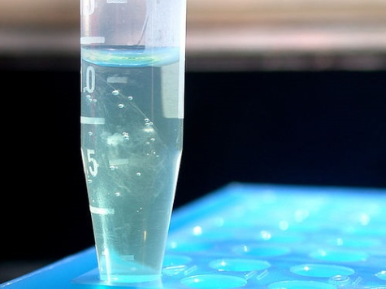
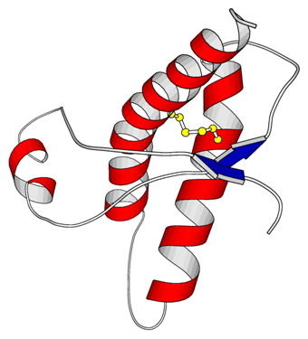

Parts
YouTube playlist:
youtube.com/watch?v=9B5e41QwoBI&list=PL2aPXzks-TgNP1FuAv0v-fS6UhCjy1waN
YouTube playlist:
youtube.com/watch?v=9B5e41QwoBI&list=PL2aPXzks-TgNP1FuAv0v-fS6UhCjy1waN
… are parts that conform to a particular set of rules (a composition standard or Format) defined to guarantee their ability to be physically joined into a contiguous DNA molecule
…gaattcgcggccgctTCTAGAg ▸ your part ◂ tACTAGTagcggccgctgcag…
Tom Knight’s original. XbaI on the front, SpeI on the back — same overhang, so back joins to front.
…gaattcatgAGATCT ▸ your part ◂ GGATCCtaactcgag…
BglII and BamHI. The junction is in frame, so two coding parts can be fused into one protein.
GGTCTCnTACT ▸ rbs.CDS ◂ GCTTnGAGACC
BsaI cuts outside itself, and the four bases it leaves are a standardised code — TACT means promoter-to-rbs, GCTT means CDS-to-terminator. Not yours to pick.
▸ part A ◂[linker 2] [linker 2]▸ part B ◂
No site, no enzyme at the join. The boundary is the same ~20 bp on both parts, from a fixed set — and Gibson, SLIC or yeast closes it.
TCTAGAgcgatcccgcgaagaaccaaaaaagctcgacagagggcgcggtcattttaggtcgggcggatcggcgccgccggctcggctggtgtgccgcacagcaccgcctacgtgagctgccagttgatgaacttcccccgttgccagctagggcgcaagcgggctgtataagatcactgcccatcacattgatcggctcggattttttcTCAATCCGTAAACAGGTCAAACATCAGTTGCCGCAACCAAATATTGGCTAGGTCCTTGTGGTACTTCGCATGCCAGAACATGTTGATGGCTATTTCAGGCAAGACGACTGGGTGCGGCAAGGCGCTTAGGCCGAAGGGCTCCACGCAGCAGTCGGCTAAACGTATCGGCACAGTGGCGAGCAGATCGGTGCGCTGGAGGATGTGGCCAACGGCGGCGAAGTGCGGCACTTCCAGACGGATGTCGCGCCGGATGCCGACCCGTGTCATGTACGTGTCCACCTCGCCGTGGCCGGTGCCAGCGGCGATGACACGCACGTGGCCGTAGGAACAGAAGCGCTCCAGAGTCAGGGGTTCGCGGGTGACTGGATGGTCCTTGCGACATAGGCACACGTAGTGATTCTGGAGCAGCCGGCGCTGAAAGAAGCCAGTTTGCAGATTGGGAAGCAGGCCCACGGCCAAGTCCACGGTTCCGTTCTGCAAGGCCTGCATCAGGCTCATCGAACTGTCGCGCACCGTACTGATCACGCAATTGGGGGCCTGGTGAGCCAGCACATCCATCAGCCGCGGCATGAAGTAGATCTCGCCAATGTCGGTCATGGCCAGGGTGAAGGTACGCTCGCTGGTCAGCGGATCGAAGCTTTCATGGTGCTGTAGGGCGTTGCGCAGTGCGTGCATGGCCGAAGTGACGGGCTCGGCCAGATGCGCGGCATAGGGTGTGGGTTCCATTCCCTGATGTGTGCGCACGAAGAGTGGGTCCTGTAGCGAGGTGCGCAGGCGTTTCAGCGCATTGCTCACGGCAGGCTGGGTCAGGCCCAGGTTCTCCGCAGTGATAGAGACGCGTCTGTCGACCAGCAACTGGTTGAACACCACCAGCAGGTTTAAATCCAGGTCACGCAGTTCCATggggcctcgcttgggttattgctggtgcccggccgggcgcaatattcatgttgatgatttattatatatcgagtggtgTATTTATCAATATTGTTTGCTCCGTTATCGTTATTAACAAGTCATCAATAAAGCCATCACGAGTaccatagaACTAGT
The whole string is the part. Inside it: the flanking restriction sites · nahR · the promoter it activates
At this level — DNA fabrication, where one part ends and the next begins — those boundaries very often will not line up with where the mRNA or the protein starts and stops. Take this one. It encodes the salicylate promoter: it encodes NahR, but it also carries all the regulation needed to express NahR, and the promoter NahR activates. Its three-prime end runs well past the transcriptional start site, and we may not even know exactly where that start site is. What we do know is that the thing works. We could refactor it into a separate promoter, RBS, CDS and terminator, and the best you would likely achieve is something close to what you started with. Nature evolved this regulon to do the job we are asking of it, in a different genetic context from our strain, so there may be room for improvement — but these structures are rarely arbitrary, and if it ain’t broke, don’t try to fix it. So we define a part by its most functionally useful form rather than by the one that matches a clean molecular description, and that leaves a naming problem: what do you call something that maps onto no single chemical entity? One answer is to classify by what it outputs. A promoter outputs transcript; a promoter with an RBS, a CDS and a terminator outputs protein. That is very effective for describing compositions and defining assembly strategies, and rarely enough to tell you what happens when you put the thing in a cell. A single continuous 1.3 kilobase sequence filling the slide: this is one part. Three features are marked inside it — the six-base restriction sites at each end, the nahR coding sequence written in upper case, and the promoter NahR activates near the far end. Everything between them is lower case and unmarked.Features represent defined DNA sequences encoding primitive elements of biological function such as protein coding sequences, promoter sequences, and origins of replication
atgaaaaacataaatgccgacgacacatacagaataattaataaaattaaagcttgtagaagcaataatgatattaatcaatgcttatctgatatgactaaaatggtacat...

